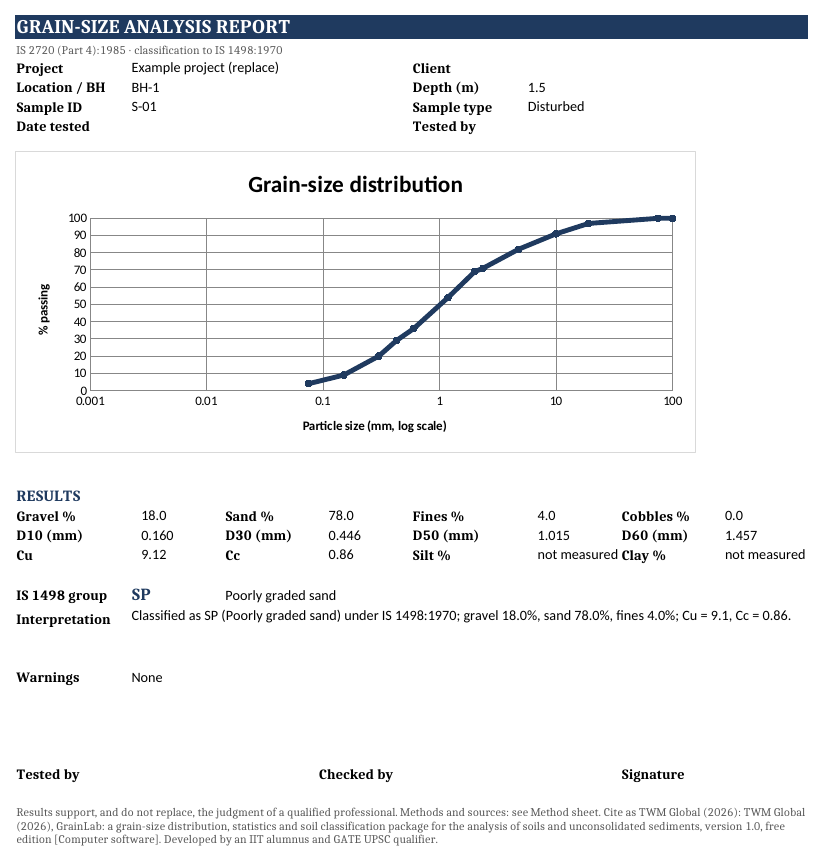
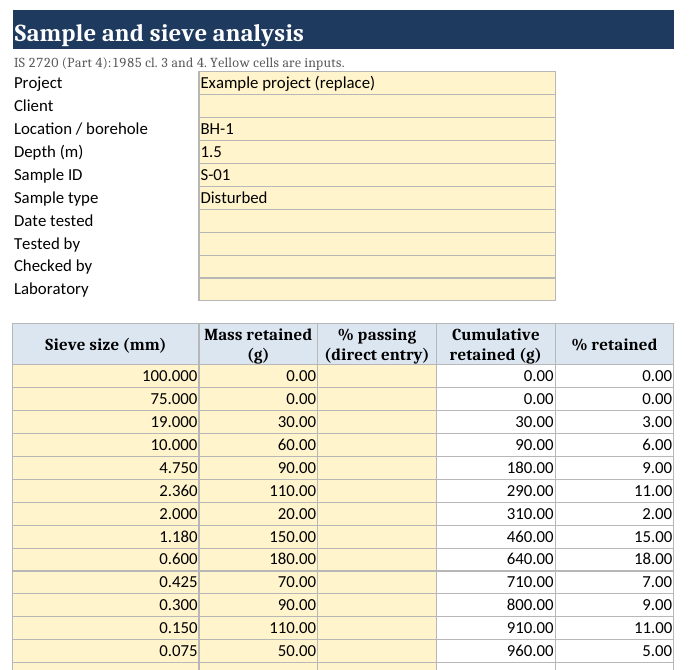

Sieve analysis in Excel, done right in two minutes
Enter the mass retained on each sieve. GrainLab draws the grain-size curve, finds D10, D30 and D60, works out Cu and Cc, and classifies the soil to IS 1498. Every formula is traced to its standard.
Free · No macros · Excel 2016 or later, or LibreOffice Calc · Questions: twmglobals@gmail.com

How it works
Enter your sieve data
Type the initial dry mass and the mass retained on each sieve, or paste % passing directly. IS and ASTM sieves both work.
Add Atterberg limits if needed
When fines are above 5%, enter the liquid and plastic limits. The sheet places the soil on the plasticity chart against the A-line.
Print the report
One A4 page with the curve, fractions, D-values, Cu, Cc, the IS 1498 group symbol and name, and any warnings.
Built to be trusted
No guessing
If D10 lies below your finest sieve, the sheet says so instead of extrapolating. Wrong sieve order, negative masses and mass-balance loss are flagged.
Every formula shown
The Method sheet lists each result, its formula and the clause it comes from. Nothing is hidden in macros.
Checked independently
Results are compared with an independent Python implementation of the same methods: every fixed check passes, and hundreds of randomly generated test datasets match. Typing errors such as units in a cell are caught with a clear message.

GrainLab Free and GrainLab Pro
| Feature | Free | Pro |
|---|---|---|
| Sieve analysis by masses or % passing (IS 2720 Part 4) | ✓ | ✓ |
| Grain-size distribution curve | ✓ | ✓ |
| D10, D30, D50, D60, Cu, Cc | ✓ | ✓ |
| Gravel, sand and fines fractions (IS 1498 Table 1) | ✓ | ✓ |
| IS 1498 soil classification with plasticity chart | ✓ | ✓ |
| ASTM E11 sieve designations | ✓ | ✓ |
| Written interpretation and IS 1498 engineering notes | ✓ | ✓ |
| One-page printable report | ✓ | ✓ |
| Hydrometer analysis (IS 2720 Part 4 cl. 5.2), silt and clay fractions | – | ✓ |
| Folk & Ward statistics and method of moments (phi, geometric, arithmetic) | – | ✓ |
| Folk (1954) gravel–sand–mud textural groups | – | ✓ |
| IS 383 fine aggregate zones, coarse and all-in grading, fineness modulus | – | ✓ |
| Filter compatibility ratios and Hazen permeability screening | – | ✓ |
Standards and methods
- IS 2720 (Part 4):1985 grain size analysis
- IS 1498:1970 classification and identification of soils
- IS 460 (Part 1):2020 test sieves; ASTM E11 sieve designations
- Casagrande (1948) coefficients of uniformity and curvature
- Archived on Zenodo: doi:10.5281/zenodo.24372027
- Pro: IS 383:2016, IS 2386 (Part 1):1963, Folk & Ward (1957), Folk (1954), Blott & Pye (2001, 2012)
How to cite
Reference: Khan, A. (2026), GrainLab: a grain-size distribution, statistics and soil classification package for the analysis of soils and unconsolidated sediments, version 1.0.2 [Computer software]. https://doi.org/10.5281/zenodo.24372027
Questions
Is GrainLab really free?
Yes. GrainLab Free covers sieve analysis, the curve, D-values, Cu, Cc and IS 1498 classification, with no time limit. GrainLab Pro adds hydrometer analysis, sediment statistics, aggregate grading and filter screening.
Can I use ASTM sieves?
Yes. Enter the opening in mm: No. 4 = 4.75, No. 10 = 2, No. 40 = 0.425, No. 200 = 0.075. The sheet shows the ASTM designation next to each size.
How is D10 worked out?
The logarithm of size is interpolated linearly between the two sieves either side of 10% passing. If 10% passing is finer than your smallest sieve, the sheet tells you instead of guessing.
Does it need macros or an internet connection?
No. It is a plain .xlsx file with ordinary formulas. It works offline in Excel 2016 or later and in LibreOffice Calc.
How is GrainLab different from GRADISTAT?
GRADISTAT focuses on sediment statistics. GrainLab adds engineering use: IS sieves and ASTM sieves, IS 1498 soil classification, a printable test report and, in Pro, hydrometer analysis and IS 383 aggregate checks.